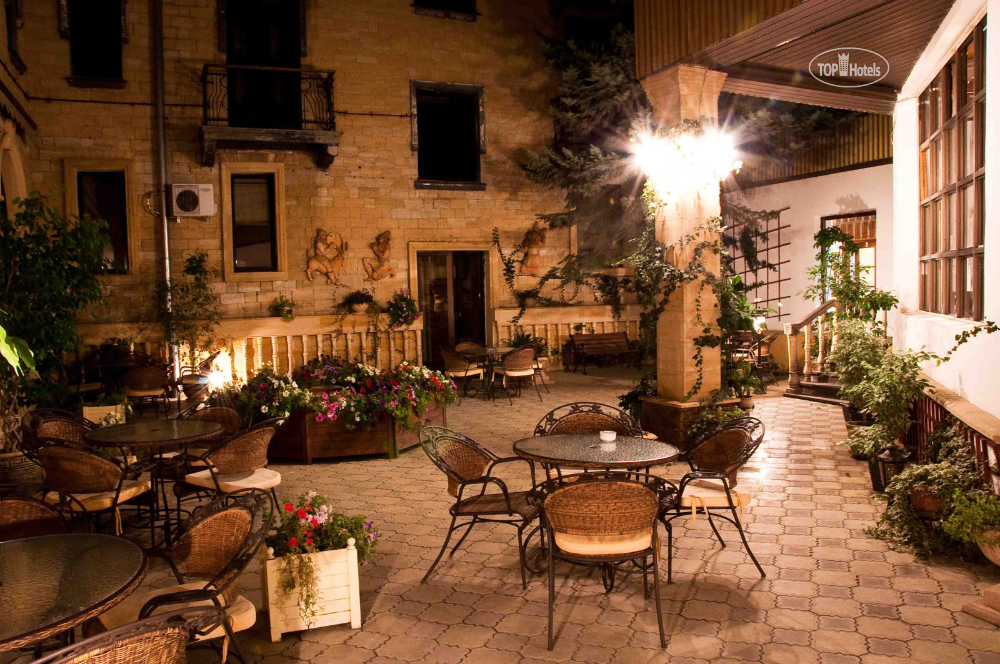

Моя первая веб-страница
Про меня
То, что мы знаем, — ограничено, а то, чего мы не знаем, бесконечно.
Я Чернова Зина. Работаю начальником теплового хозяйства. Решила узнать профессию Веб-разработчик, чтобы разобраться как устроен веб. Хочу создавать сайты, веб-приложения и поддерживать уже существующие. А также создать сайт для своей уютной кафейни "Italia".
Живу в Питере. Люблю живопись, пишу картины в свободное время.
Чему я хочу научиться
На этом курсе я хотела бы научиться создавать сайты с нуля.
Плюсы которые я увидела для себя в профессии Веб-разработчик:
- Востребованность на рынке труда.
- Творческая работа, так как каждая задача уникальна, и для ее решения существует несколько способов.
- Возможность совмещения с личной деятельностью.
- Возможность удаленной работы.
- Постоянное развитие.